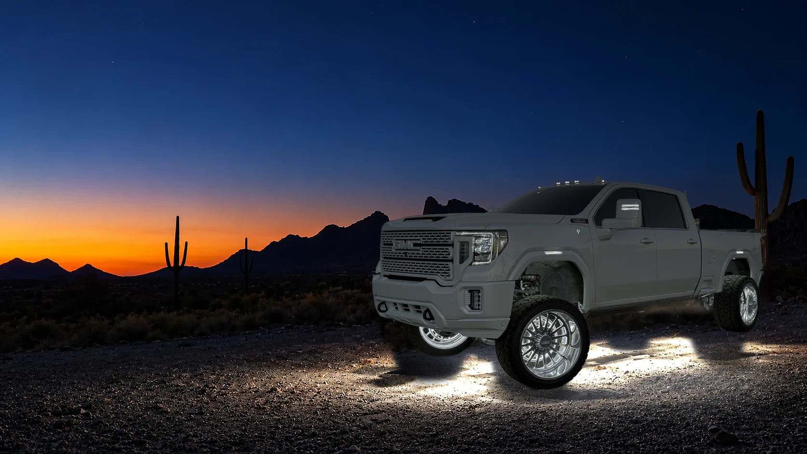
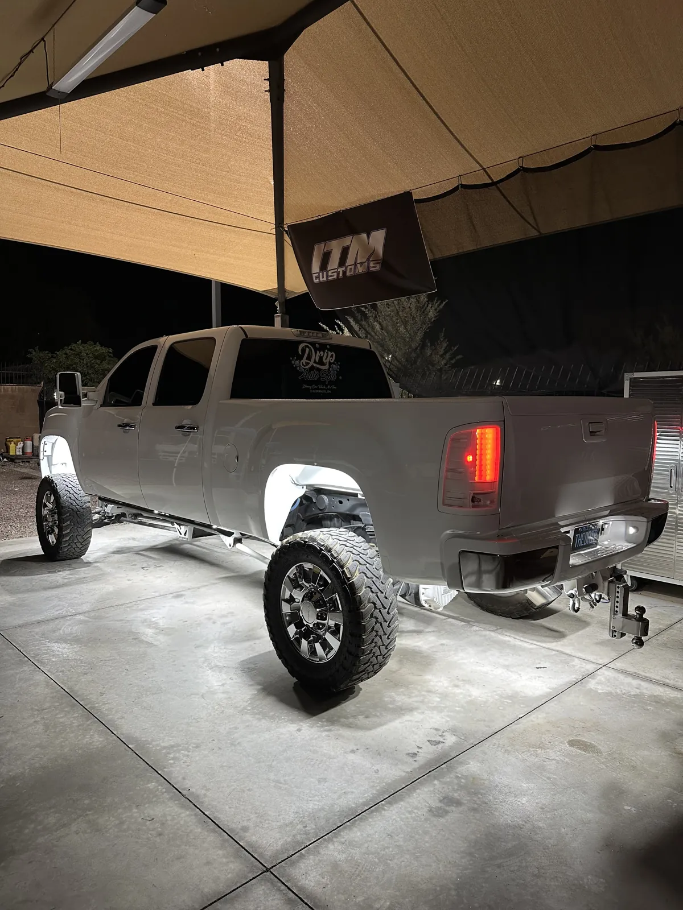
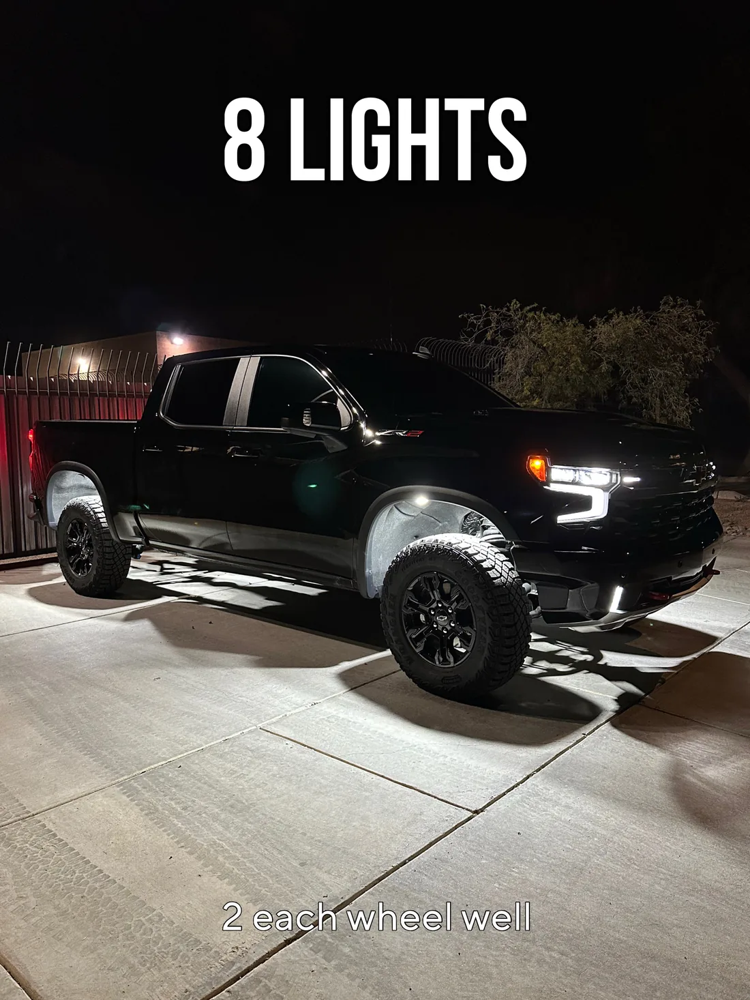
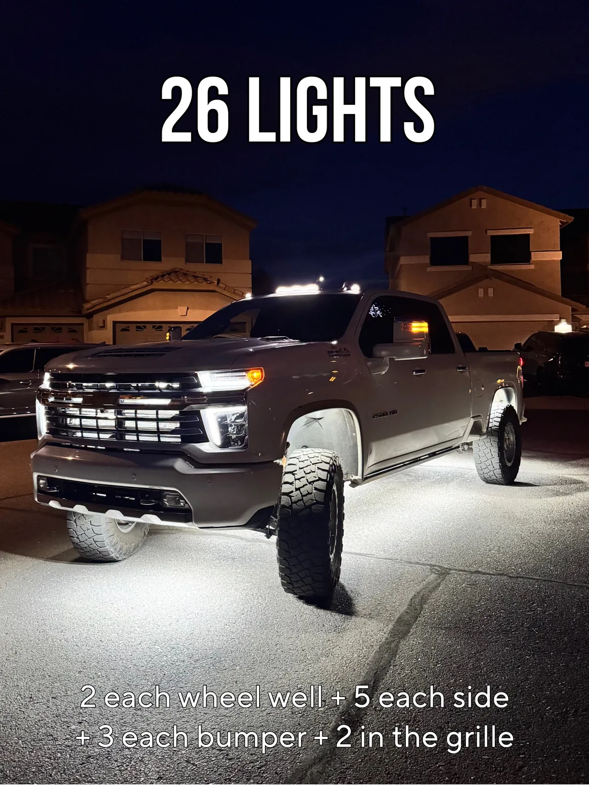

DIY Wiring
72-Chip Pure White Rock Lights
- 72 LED Chip
- 14 W
- Pack Of 4
$45 pack of 4
Rock Lights And Underglow · Mesa, AZ
We make our own rock lights in pure white, RGBW color and white-and-amber switchback, and we install them at our shop in Mesa. Spread out under a truck, they're also how we build underglow. Order a kit and wire it yourself, or drop your truck off and pick it up lit.



Rock lights are small sealed LED lights that mount under a vehicle and point at the ground. Off-road drivers started using them to see the rocks under their tires on night trails, which is where the name comes from.
On a truck in town they do two jobs. They light up the ground around the truck so you can see where you're stepping, parking or hooking up a trailer, and they make the truck stand out in a dark parking lot. Most of our customers want both.
A set usually goes in the wheel wells first, two per well, then along the sides and bumpers as you add more. The more lights you run, the less shadow is left under the truck.
We sell six rock lights. The biggest differences are the color, how they wire up, and whether you buy them in packs or by the light count.
| Light | Color | Wiring | Sold As | Price |
|---|---|---|---|---|
| 72-Chip Pure White | White | DIY | Pack of 4 | $45 a pack |
| 84-Chip Pure White | White | DIY | Pack of 4 | $55 a pack |
| 144-Chip Pure White Kit | White | Plug and play | 4 to 24 lights | $210 to $840 |
| 219-Chip Pure White Kit | White | Plug and play | 4 to 24 lights | $240 to $920 |
| RGBW Color Kit | Any color + white | Plug and play | 4 to 20 lights | $205 to $705 |
| 112-Chip Switchback Kit | White + amber | Plug and play | 4 to 20 lights | $200 to $700 |
The RGBW and switchback kits come with the module, remote and Bluetooth app, and they're waterproof.
Pure white is what most trucks run, and it's the color you can leave on while driving in Arizona. We make it in three sizes.
The 72-chip comes in a pack of four with rubber pads and mounting hardware. The 84-chip is our brightest light you wire yourself, also in packs of four with the same pads and hardware. Both have about 11 inches of wire on each light, and you wire them together, so they suit someone comfortable with a crimp tool or anyone who books the install.
The 144-chip and 219-chip lights are our plug-and-play pure whites, each sold as a kit by light count from 4 to 24. The GMC below runs 16 of them: two above each tire, two on each side and two on each bumper.



$45 pack of 4

$55 pack of 4

$640 16 lights

$700 16 lights
Rock lights don't have to stop under the truck. Two in the grille light the front end, and two under the hood light up the engine bay when it's open.
This GMC runs our 144-chip lights underneath and 84-chip lights in the grille and under the hood. Pick the add-ons when you book a rock light install, or add a pack of four 84-chip lights to your cart.


The RGBW kit uses a 44-chip light that does red, green, blue and a true white. You pick the color from your phone with the Bluetooth app or the remote, so the same truck can be white on the road and green or red at a show.
It's full plug and play with the module, remote and app, it's waterproof, and it comes in kits of 4 to 20 lights. The red, blue and green photos are the same GMC running 20 lights.


$205 4 lights
Underglow and rock lights are the same light doing a different job. Spread enough rock lights under a truck or car and the ground lights up as one even glow, which is what most people mean by underglow. We build it from sealed pods instead of LED strips.
Each pod is sealed on its own, so one damaged light doesn't take out a whole side, and each one is aimed where it's needed. Run pure white and you can drive with it on. Run the RGBW kit and you get white for the road and color once you're parked.
Underglow takes more lights than wheel-well lighting, because the goal is an even glow down the whole side. On a car or a short truck, 12 lights covers the wheel wells and the sides. On a crew cab, plan on 16 to 20. Lowered trucks and cars are where it looks best, since the light pools tighter, and we check clearance at drop-off before anything is mounted.


Start with two in each wheel well. That's 8 lights, and it's the minimum we'd put on a truck. From there you add lights along the sides, then the bumpers, then the grille and down the middle. These are real ITM installs at each count, with where every light went.





Our pure white packs come in fours, so round up to the next pack. 20 lights is five packs. The kits are sold by the light count you pick.
Rock lights either bolt to the frame or stick to it. The 72 and 84-chip packs include mounting hardware for bolting them on. If you'd rather not drill, our magnetic mounts are 1/8-inch CNC-cut aluminum, made in the USA, and fit the 72 and 84-chip lights. They're $10 each.
On an install we pick the mount that suits your frame and where each light needs to point.

$10 each
Underglow isn't banned by name in Arizona. The rules for it, and for rock lights and other accent lighting, live in A.R.S. 28-947, and three parts of that law matter once you're on the road.
Red and blue can't face forward
You can't drive on a highway with a light that can show red, or red and blue, visible from directly in front of the vehicle. Lights visible from the front have to be amber or white.
Flashing is for parked vehicles
Flashing lights are only allowed on emergency vehicles, as warning lights on a disabled or parked vehicle, and as turn signals. Strobe and chase modes are for car shows and the driveway, not the drive home.
Bright lights stay pointed down
Any lamp over 300 candlepower, other than headlights and a few others, can't throw its beam more than 75 feet onto the road. Rock lights aim at the ground under the truck, which is the point.
In practice that means solid white is the everyday setting, and colors and flashing modes are for when you're parked. Read the statute yourself at azleg.gov. This is a plain-English summary, not legal advice.
Trucks running our lights. Tap one for the full build.
Underglow isn't banned by name, but A.R.S. 28-947 says no red or blue light can be visible from the front of a vehicle on a highway, lights visible from the front must be amber or white, and flashing lights are only allowed in a few cases, like turn signals and parked warning lights. White rock lights and white underglow are the safe setting on the road. Save colors and flashing modes for when you're parked.
We build underglow from rock light pods. If you already have a strip kit, book an install, pick Bringing My Own and tell us what it is.
Our pure white packs are $45 and $55 for four lights. The 144-chip kit runs $210 to $840, the 219-chip kit $240 to $920, the RGBW kit $205 to $705 and the switchback kit $200 to $700, depending on how many lights you pick. Install labor is quoted before any work starts.
Two per wheel well is how we start almost every truck. That's 8 lights before you add any to the sides or bumpers.
The 72 and 84-chip packs are DIY wiring. The 144 and 219-chip kits are plug and play, and so are the RGBW and switchback kits, which come with a module, remote and app. Or book an install and we wire any of them.
Lights are built to order. Allow 2 to 3 weeks for processing and shipping.
Yes. Our lights have gone on trucks, a Sprinter van, a RZR and even a riding mower. Anything with a frame to mount to can run them.
Installs In Mesa
Bring our kit or your own lights. We text you to confirm your drop-off and quote.
Other Services ITM Offers